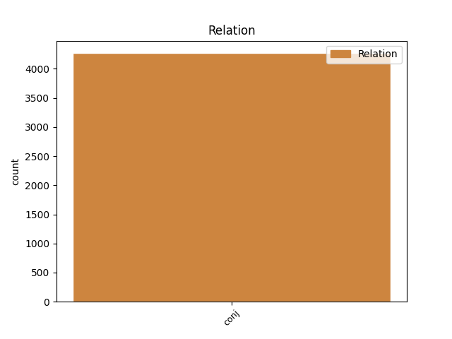
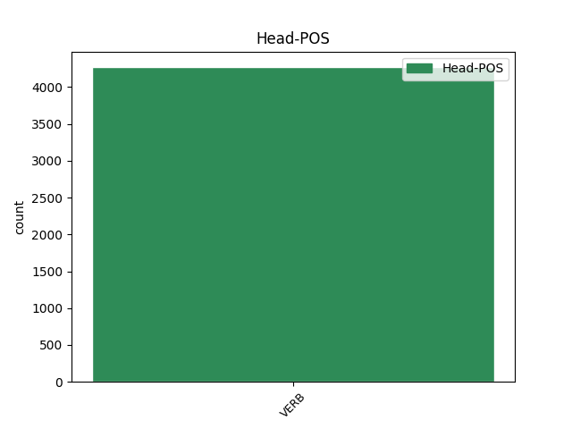
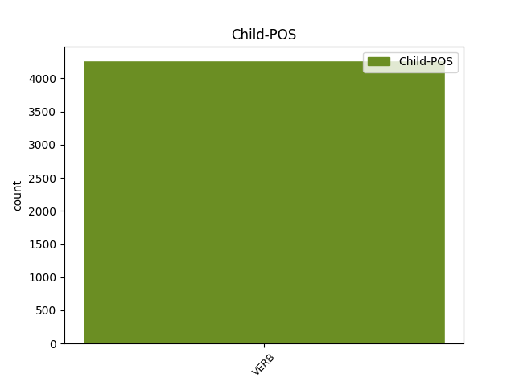

Distribution of features within this leaf



Agreement Rules sorted by frequency.
- When the dependent token is the conjunct(conj) of the head token,
1 σὺ _ _ _ _ 0 _ _ _
2 καὶ _ _ _ _ 0 _ _ _
3 λέγων λέγω VERB v-sppamn- Case=Nom|Gender=Masc|Number=Sing|Tense=Pres|VerbForm=Part|Voice=Act 0 _ _ _
4 εὔφραινε _ _ _ _ 0 _ _ _
5 καὶ _ _ _ _ 0 _ _ _
6 πράσσων πράσσω VERB v-sppamn- Case=Nom|Gender=Masc|Number=Sing|Tense=Pres|VerbForm=Part|Voice=Act 3 conj _ _
7 φρένα _ _ _ _ 0 _ _ _
8 . _ _ _ _ 0 _ _ _
Disagree Examples:
1 καὶ _ _ _ _ 0 _ _ _
2 ὁ _ _ _ _ 0 _ _ _
3 Ῥηγῖνος _ _ _ _ 0 _ _ _
4 δὲ _ _ _ _ 0 _ _ _
5 Ἴβυκος _ _ _ _ 0 _ _ _
6 βοᾷ βοάω VERB v3spia--- Mood=Ind|Number=Sing|Person=3|Tense=Pres|VerbForm=Fin|Voice=Act 0 _ _ _
7 καὶ _ _ _ _ 0 _ _ _
8 κέκραγεν κράζω VERB v3sria--- Aspect=Perf|Mood=Ind|Number=Sing|Person=3|Tense=Past|VerbForm=Fin|Voice=Act 6 conj _ SpaceAfter=No
9 · _ _ _ _ 0 _ _ _
1 Δικαίαρχος _ _ _ _ 0 _ _ _
2 γοῦν _ _ _ _ 0 _ _ _
3 ἐν _ _ _ _ 0 _ _ _
4 τῷ _ _ _ _ 0 _ _ _
5 περὶ _ _ _ _ 0 _ _ _
6 τῆς _ _ _ _ 0 _ _ _
7 ἐν _ _ _ _ 0 _ _ _
8 Ἰλίῳ _ _ _ _ 0 _ _ _
9 Θυσίας _ _ _ _ 0 _ _ _
10 Βαγώου _ _ _ _ 0 _ _ _
11 τοῦ _ _ _ _ 0 _ _ _
12 εὐνούχου _ _ _ _ 0 _ _ _
13 οὕτως _ _ _ _ 0 _ _ _
14 αὐτόν _ _ _ _ 0 _ _ _
15 φησιν φημί VERB v3spia--- Mood=Ind|Number=Sing|Person=3|Tense=Pres|VerbForm=Fin|Voice=Act 0 _ _ _
16 ἡττᾶσθαι _ _ _ _ 0 _ _ _
17 ὡς _ _ _ _ 0 _ _ _
18 ἐν _ _ _ _ 0 _ _ _
19 ὄψει _ _ _ _ 0 _ _ _
20 θεάτρου _ _ _ _ 0 _ _ _
21 ὅλου _ _ _ _ 0 _ _ _
22 καταφιλεῖν _ _ _ _ 0 _ _ _
23 αὐτὸν _ _ _ _ 0 _ _ _
24 ἀνακλάσαντα _ _ _ _ 0 _ _ _
25 , _ _ _ _ 0 _ _ _
26 καὶ _ _ _ _ 0 _ _ _
27 τῶν _ _ _ _ 0 _ _ _
28 θεατῶν _ _ _ _ 0 _ _ _
29 ἐπιφωνησάντων _ _ _ _ 0 _ _ _
30 μετὰ _ _ _ _ 0 _ _ _
31 κρότου _ _ _ _ 0 _ _ _
32 οὐκ _ _ _ _ 0 _ _ _
33 ἀπειθήσας _ _ _ _ 0 _ _ _
34 πάλιν _ _ _ _ 0 _ _ _
35 ἀνακλάσας _ _ _ _ 0 _ _ _
36 ἐφίλησεν φιλέω VERB v3saia--- Mood=Ind|Number=Sing|Person=3|Tense=Past|VerbForm=Fin|Voice=Act 15 conj _ SpaceAfter=No
37 . _ _ _ _ 0 _ _ _
1 καὶ _ _ _ _ 0 _ _ _
2 ὁ _ _ _ _ 0 _ _ _
3 Σοφοκλῆς _ _ _ _ 0 _ _ _
4 ἀκούσας _ _ _ _ 0 _ _ _
5 ἐποίησεν _ _ _ _ 0 _ _ _
6 εἰς _ _ _ _ 0 _ _ _
7 αὐτὸν _ _ _ _ 0 _ _ _
8 τὸ _ _ _ _ 0 _ _ _
9 τοιοῦτον _ _ _ _ 0 _ _ _
10 ἐπίγραμμα _ _ _ _ 0 _ _ _
11 , _ _ _ _ 0 _ _ _
12 χρησάμενος χράω VERB v-sapmmn- Case=Nom|Gender=Masc|Number=Sing|Tense=Past|VerbForm=Part|Voice=Mid 0 _ _ _
13 τῷ _ _ _ _ 0 _ _ _
14 περὶ _ _ _ _ 0 _ _ _
15 τοῦ _ _ _ _ 0 _ _ _
16 Ἡλίου _ _ _ _ 0 _ _ _
17 καὶ _ _ _ _ 0 _ _ _
18 Βορέου _ _ _ _ 0 _ _ _
19 λόγῳ _ _ _ _ 0 _ _ _
20 , _ _ _ _ 0 _ _ _
21 καί _ _ _ _ 0 _ _ _
22 τι _ _ _ _ 0 _ _ _
23 πρὸς _ _ _ _ 0 _ _ _
24 μοιχείαν _ _ _ _ 0 _ _ _
25 αὐτοῦ _ _ _ _ 0 _ _ _
26 παραινιττόμενος παρά-αἰνίσσομαι VERB v-sppemn- Case=Nom|Gender=Masc|Number=Sing|Tense=Pres|VerbForm=Part|Voice=Mid 12 conj _ SpaceAfter=No
27 · _ _ _ _ 0 _ _ _
1 Φύλαρχος _ _ _ _ 0 _ _ _
2 γοῦν _ _ _ _ 0 _ _ _
3 ἐν _ _ _ _ 0 _ _ _
4 τῇ _ _ _ _ 0 _ _ _
5 δωδεκάτῃ _ _ _ _ 0 _ _ _
6 κοίρανος _ _ _ _ 0 _ _ _
7 , _ _ _ _ 0 _ _ _
8 φησίν _ _ _ _ 0 _ _ _
9 , _ _ _ _ 0 _ _ _
10 ὁ _ _ _ _ 0 _ _ _
11 Μιλήσιος _ _ _ _ 0 _ _ _
12 ἰδὼν _ _ _ _ 0 _ _ _
13 ἁλιέας _ _ _ _ 0 _ _ _
14 τῷ _ _ _ _ 0 _ _ _
15 δικτύῳ _ _ _ _ 0 _ _ _
16 λαβόντας λαμβάνω VERB v-papama- Case=Acc|Gender=Masc|Number=Plur|Tense=Past|VerbForm=Part|Voice=Act 0 _ _ _
17 δελφῖνα _ _ _ _ 0 _ _ _
18 καὶ _ _ _ _ 0 _ _ _
19 μέλλοντας μέλλω VERB v-pppama- Case=Acc|Gender=Masc|Number=Plur|Tense=Pres|VerbForm=Part|Voice=Act 16 conj _ _
20 κατακόπτειν _ _ _ _ 0 _ _ _
21 ἀργύριον _ _ _ _ 0 _ _ _
22 δοὺς _ _ _ _ 0 _ _ _
23 καὶ _ _ _ _ 0 _ _ _
24 παραιτησάμενος _ _ _ _ 0 _ _ _
25 ἀφῆκεν _ _ _ _ 0 _ _ _
26 εἰς _ _ _ _ 0 _ _ _
27 τὸ _ _ _ _ 0 _ _ _
28 πέλαγος _ _ _ _ 0 _ _ _
29 . _ _ _ _ 0 _ _ _
1 τελευτήσαντος τελευτάω VERB v-sapamg- Case=Gen|Gender=Masc|Number=Sing|Tense=Past|VerbForm=Part|Voice=Act 0 _ _ _
2 δ̓ _ _ _ _ 0 _ _ _
3 αὐτοῦ _ _ _ _ 0 _ _ _
4 γηραιοῦ _ _ _ _ 0 _ _ _
5 ἐν _ _ _ _ 0 _ _ _
6 τῇ _ _ _ _ 0 _ _ _
7 πατρίδι _ _ _ _ 0 _ _ _
8 καὶ _ _ _ _ 0 _ _ _
9 τῆς _ _ _ _ 0 _ _ _
10 ἐκφορᾶς _ _ _ _ 0 _ _ _
11 παρὰ _ _ _ _ 0 _ _ _
12 τὴν _ _ _ _ 0 _ _ _
13 θάλατταν _ _ _ _ 0 _ _ _
14 γιγνομένης γίγνομαι VERB v-sppefg- Case=Gen|Gender=Fem|Number=Sing|Tense=Pres|VerbForm=Part|Voice=Mid 1 conj _ _
15 κατὰ _ _ _ _ 0 _ _ _
16 τύχην _ _ _ _ 0 _ _ _
17 ἐν _ _ _ _ 0 _ _ _
18 τῇ _ _ _ _ 0 _ _ _
19 Μιλήτῳ _ _ _ _ 0 _ _ _
20 , _ _ _ _ 0 _ _ _
21 ἐν _ _ _ _ 0 _ _ _
22 τῷ _ _ _ _ 0 _ _ _
23 λιμένι _ _ _ _ 0 _ _ _
24 πλῆθος _ _ _ _ 0 _ _ _
25 δελφίνων _ _ _ _ 0 _ _ _
26 ἐφάνη _ _ _ _ 0 _ _ _
27 ἐν _ _ _ _ 0 _ _ _
28 τῇ _ _ _ _ 0 _ _ _
29 ἡμέρᾳ _ _ _ _ 0 _ _ _
30 ἐκείνῃ _ _ _ _ 0 _ _ _
31 μικρὸν _ _ _ _ 0 _ _ _
32 ἀπωτέρω _ _ _ _ 0 _ _ _
33 τῶν _ _ _ _ 0 _ _ _
34 συνεκκομιζόντων _ _ _ _ 0 _ _ _
35 τὸν _ _ _ _ 0 _ _ _
36 Κοίρανον _ _ _ _ 0 _ _ _
37 , _ _ _ _ 0 _ _ _
38 ὡσεὶ _ _ _ _ 0 _ _ _
39 συνεκφερόντων _ _ _ _ 0 _ _ _
40 καὶ _ _ _ _ 0 _ _ _
41 συγκηδευόντων _ _ _ _ 0 _ _ _
42 τὸν _ _ _ _ 0 _ _ _
43 ἄνθρωπον _ _ _ _ 0 _ _ _
44 . _ _ _ _ 0 _ _ _